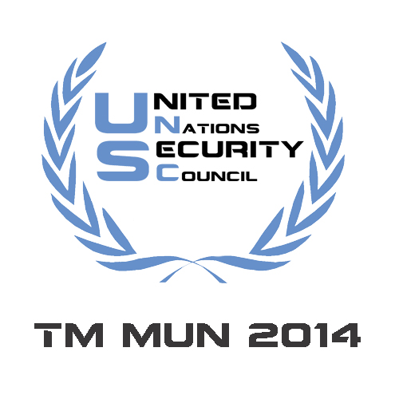
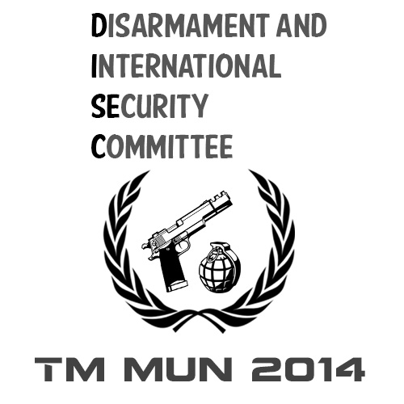
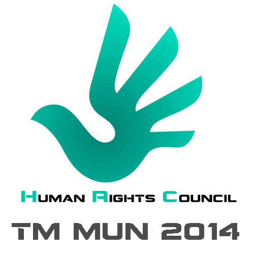

Committees

UNSC
Agendas:
1. Neutralising unrest in the Gaza strip.
2. Combating Terrorism in Africa.
The United Nations Security Council (UNSC) is charged with the maintenance of international peace and security.
It does so by calling upon parties to settle disputes by peaceful means and also by authorising military actions,
peacekeeping operations and international sanctions if necessary. Under the UN Charter,
the Security Council is the only council in the UN that has the power to issue binding resolutions to its member nations,
which it can enforce by the use of UN peacekeeping forces.
DISEC
Agendas:
1. The destabilising effects of foreign military bases and nuclear weapon zones in the Middle East.
2. Demilitarising the Crimean Peninsula.
The Disarmament and International Security Committee (DISEC) is one of the 6 main committees of the General Assembly,
the only committee in which all member nations have equal representation.
It is also known as the First Committee and it deals with matters that concern threats to world peace,
global challenges and disarmament. The committee considers all international security maters within the scope of the UN Charter,
including the general principles of cooperation and disarmament in the maintenance of international peace and security and the
strengthening of stability through lower levels of armament.
UNHRC